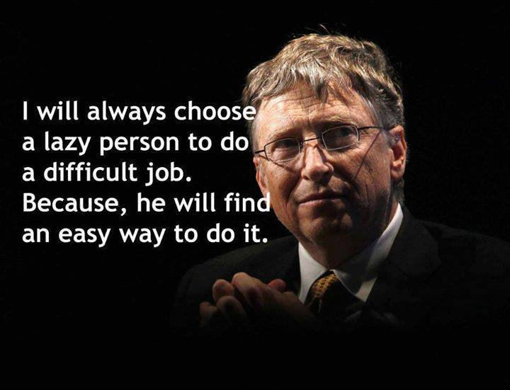

Introdução à Programação com JavaScript
Victor Alberto Romero
FCTH
Linguagens no mundo da computação
Os seres humanos nos comunicamos a través de linguagens.
A maioria são criadas naturalmente, como o português, mas outras são artificiais.
Entre artificiais mais famosas encontramos as usadas na programação
Linguagens no mundo da computação

Cada linguagem foi criada com um objetivo específico e tem detalhes a serem estudados
Classificação das linguagens
Existem múltiplas classificações das linguagens computacionais
O grupo maior são as linguagens de programação, mas nem toda linguagem usa-se para programar
Vamos ver o grupos mais comuns (mas tem mais grupos, e mais linguagens em cada grupo)
Tipos de linguagens:
Vectoriais e matemáticas
- Fortran
- Matlab
- Julia
- R
- Wolfram
Linha de comandos
- DOS
- Bash
- CMD / PowerShell
Tipos de linguagens:
Propósito geral: Compiladas
- C/C++/C#
- Basic
- Cobol
- Fortran
- Pascal
- Python
- Java
Tipos de linguagens:
Propósito geral: Interpretadas
- Python
- JavaScript
- PHP
De marcas
- XML
- HTML
- LaTex
Tipos de linguagens:
Orientados à manipulação de dados
- SQL
De estilos
- CSS
O que é programar?
Descrever como fazer uma tarefa
Por exemplo, programar uma viagem é descrever a sequência de passos que vamos a realizar em dita viagem
Programar contem condições iniciais e objetivos a alcançar
Como é uma sequência de passos, quer dizer que vamos de um ESTADO inicial a um ESTADO final
Algoritmos
Algoritmo é o conceito matemático, descreve uma sequência de passos ordenada, mecânica, não ambígua, precisa, eficiente e correta de realizar uma tarefa. (Dasgupta, Papadimitriou e Vazirani, 2010)
O conceito foi formalizado em 1936 por Alan Turing
Ou seja, programar é o ato de IMPLEMENTAR algoritmos
Que é uma linguagem de programação?
Neste contexto, uma linguagem de programação é uma convenção ENTRE PESSOAS de como expressar ideias
É em essência uma LINGUAGEM, quer dizer:
- Nem todo mundo fala ela, nem teria porque
- Posso expressar o mesmo nela ou em outra
- Tem linguagens mais cómodas para expressar algumas coisas que outras
Que é uma linguagem de programação?
- Tem sintaxes e semântica. Importa tanto o que eu quero dizer como a forma e as palavras usadas
- Tem gramática que pode ser entendida e estudada
- Tem varias formas de dizer o mesmo, umas melhores que outras
- Tem problemas de ambiguidade
A linguagem JavaScript
JavaScript para programação web: HTML, CSS e JavaScript.
A linguagem JavaScript
Primeiro temos o HTML
<html>
<head>
<meta charset="utf-8">
<title>HTML</title>
</head>
<body>
<h2>Umas imagens com HTML</h2>
<p>HTML está feito para escrever o conteúdo das coisas e dar uma
formatada básica. Por exemplo aqui temos um título (tipo h2) e
um parágrafo. Também temos umas imagens</p>
<img src="images/HTML5a.jpg" alt="HTML5a">
<img src="images/HTML5b.jpg" alt="HTML5b">
<img src="images/HTML5c.jpg" alt="HTML5c">
<img src="images/HTML5d.jpg" alt="HTML5d">
</body> </html>
A linguagem JavaScript
Depois temos o CSS
.content {
max-width: 1024px;
margin: auto;
background: white;
padding: 10px;
}
.title {
font-size: xx-large;
text-align: center;
font-family: Georgia;
color: #db6630;
}
.text {
font-size: x-large;
font-family: Georgia;
}
.img {
border-radius: 10%;
border: 2px solid #cc7422;
width: 200px;
margin-left: 10px;
}
.container {
text-align: center;
}
A linguagem JavaScript
Para finalmente ter o JavaScript
var count = 1;
var images = ["images/HTML5a.jpg",
"images/HTML5b.jpg",
"images/HTML5c.jpg",
"images/HTML5d.jpg"];
function codigo(){
document.getElementById("baseImg").src=images[count];
count = (count+1)%4;
}
A linguagem JavaScript

Hello World!
É costume para os programadores que o primeiro código de teste é um Hello World, então vamos lá
Hello World!
O HTML
<html>
<body>
<script type="text/javascript" src="HelloWorld.js">
</script>
</body>
</html>Hello World!
O JavaScript. Como é tão simples, não vamos ter CSS
alert('Hello world!');
Começando com JavaScript
A partir daqui ignoraremos os arquivos HTML, já que serão simplesmente um arquivo para invocar o JavaScript. Vamos então a fazer um pouco de código
Saída de código
// As linhas que começam com barra-barra são comentários.
/* Também funciona para várias linhas abrindo com barra-estrela e
fechando com estrela-barra. */
// Os comentários estão no código, mas são ignorados pela máquina,
// ela simplesmente não vê eles. Então para que usamos eles? Para
// a gente se guiar na hora que o código não é claro por sim só.
// Como os comentários são escritos por pessoas, para pessoas, é bom
// que eles sejam claros.
// Tem dois jeitos de fazer uma saída de dados, um é com alert:
alert('Hello world em alert!');
// o outro é com console. Console é bem melhor para ver variáveis
console.log('Hello world em console!');
Hello Pepe!
// Vamos agora a ver uma entrada de dados:
name = prompt('Qual é seu nome?');
// Tem dois jeitos de fazer uma saída de dados,
// um é com alert:
alert('Bom dia ' + name + '!');
Variáveis em Javacript
Na linguagem JavaScript precisamos trabalhar com valores.
Estes valores podem ser um nome, um número ou qualquer outro tipo de informação que precisemos.
Para identificar este valores usamos variáveis.
As variáveis de programação são semelhantes às do cálculo, mas estas tem um ESTADO associado, então podemos dizer que são funções do estado.
Números
// Posso definir números diretamente:
var num1 = 11;
var num2 = 45.3;
// Os números em JavaScript sempre são double,
// então da na mesma:
var num3 = 5;
var num4 = 5.0;
// Os números também podem ser resultado de
// uma expressão
var res1 = num1 / 2;
var res2 = num2 / res1;
// E posso ver esse resultado
console.log(res1);
console.log(res2);
// JavaScript suporta as 4 operações básicas
var res = (((4 + 9.1) * 5) - 8)/3;
console.log("res: " + res);
Números
// Também suporta algumas operações especiais
var res3 =14 % 3 // Este é chamado módulo
console.log("res3 depois do modulo: " + res3);
res3++;
console.log("res3 depois do ++: " + res3);
res3--;
res3--;
console.log("res3 depois de dois --: " + res3);
// v++ equivale a dizer v = v + 1
// v-- equivale a dizer v = v - 1
// Mas tem um detalhe:
var x = 5;
var y = x++;
console.log("x: " + x + " y: " + y);
var x = 5;
var y = --x;
console.log("x: " + x + " y: " + y);
Números
// Tem vários tipos de atribuição
var y = 5;
console.log(y);
y += 5; // y = y + 5
console.log(y);
y -= 3; // y = y - 3
console.log(y);
y *= 2; // y = y * 2
console.log(y);
y /= 2; // y = y / 2
console.log(y);
y %= 3; // y = y % 3
console.log(y);
Booleanos
As variáveis booleanas expressam coisas verdadeiras ou falsas
São usadas para controlar fluxos ou salvar informação binária
Booleanos
var bool1 = true;
var bool2 = false;
console.log(bool1);
console.log(bool2);
Strings
Os strings (ou cadeias de letras) são o jeito que se tem para guardar texto.
Podem ser tão compridas como seja necessário
Muitas coisas podem ser salvas como strings, mas recomenda-se deixar este tipo de dados só para expressões alfanuméricas
Strings
// Posso criar string de duas maneiras,
// com " e com '
var str1 = "Olá";
var str2 = 'tchau';
// Posso imprimir um string
console.log(str1);
// Também posso operar (somar) strings
var str3 = str1 + " Pepe.";
console.log(str3);
console.log(str3 + " Agora " + str2 + "!");
Arrays
Os Arrays são conjuntos de dados ordenados
Podem ser de múltiplos tipos, inclusive podem estar misturados
Arrays
// Os array são conjuntos de dados ordenados
var arr1 = ['A', 'B', 'C', 'D'];
// Vamos ver o que ele mostra
console.log(arr1);
// JavaScript leva a conta dos elementos do array,
// mas começa a conta em 0. Ou seja, o arr1 tem os
// elementos A, B, C e D nas posições 0, 1, 2 e 3
console.log(arr1[2]);
// Podemos também modificar o valor de um array
arr1[2] = 'Z';
console.log(arr1);
// Podemos facilmente adicionar ao final dum array
arr1.push('W');
arr1.push('Y');
console.log(arr1);
// Também podemos eliminar um conjunto de elementos
var indice = 2;
var numElementos = 2;
arr1.splice(indice, numElementos);
console.log(arr1);
// Um array pode conter coisas de diferentes tipos
arr2 = [1, 2, 'oi'];
console.log(arr2);
Objetos
Os Objetos são um conceito simples mais poderoso
Eles estão presentes em muitas linguagens, que são conhecidas como orientadas a objetos
Para uma linguagem ser COMPLETAMENTE orientada a objetos, tem que suportar várias propriedades dos objetos
JavaScript é orientada a objetos completa
Vamos focar só nas coisas más básicas
Objetos
// Podemos simplificar e dizer que um objeto é
// um array no qual cada coisa tem nome
var obj1 = {nome : "Pepe",
idade : 40,
gostaFutebol : false};
// Posso mostrar o conteudo do objeto
console.log(obj1);
// Também posso mostrar só alguma das coisas
console.log(obj1.nome);
console.log(obj1.gostaFutebol);
// Objetos são legais para guardar informação
// diferente junta
var obj2 = {nome : "Arnold",
idade : 70,
gostaFutebol : true};
var objetos = [obj1, obj2];
// Que teria que sair aqui?
// console.log(objetos[1].nome)
Expressões de controle
As expressões de controle definem quando um determinado código vai ser executado ou não
Para uma linguagem ser chamada de programação precisa ter expressões de controle.
É aqui que vamos usar as expressões booleanas
Expressões de controle
var num1 = 5;
// Um if é uma instrução que permite controlar
// se um código vai ser executado ou não
console.log("Algo que acontece antes");
if(num1 == 5){
console.log("Meu número é igual a 5");
}
console.log("Algo que acontece depois");
// Também posso dizer uma coisa OU outra
if(num1 == 5){
console.log("Meu número é igual a 5");
}
else{
console.log("Meu número é diferente de 5");
}
// Ou que alguma coisa é diretamente diferente
if(num1 != 5){
console.log("Meu número é diferente de 5");
}
// Tenho outros comparadores
if(num1 > 5){
console.log("Meu número é maior a 5");
}
if(num1 < 5){
console.log("Meu número é menor a 5");
}
if(num1 >= 5){
console.log("Meu número é maior ou igual a 5");
}
if(num1 <= 5){
console.log("Meu número é menor ou igual a 5");
}
// Posso fazer também uma comparação mais profunda
if(num1 == "5"){
console.log("Com um string também funciona!!");
}
if(num1 === "5"){
console.log("Se quero que seja exatamente igual (valor E tipo)");
}
else{
console.log("Não é exatamente igual");
}
// Finalmente tenho o resto da logica booleana
var num2 = 7;
if(num1 == 5 && num2 ==7){
console.log("num1 == 5 && num2 ==7");
}
if(num1 == 9 || num2 ==7){
console.log("num1 == 9 || num2 ==7");
}
if(num1 == 5 || num2 ==2){
console.log("num1 == 5 || num2 ==2");
}
if(!(num1 == 9)){
console.log("!(num1 == 9)");
}
Laços de repetição
Programar é fundamentalmente um ato de preguiça
Laços de repetição
// Os laços de repetição permitem realizar sequências
// repetitivas fácil e rapidamente. Ao invés de
// escrever muitas coisas, expressamos tudo com lógica
//
// WARNING: Temos que garantir que o ciclo para!!!
var num1 = 5;
while(num1 > 0){
console.log("O valor de num1 neste ponto é: " + num1);
num1--;
}
// Para os laços de repetição (para a linguagem todo na
// verdade) é muito útil ler o código que está escrito
// "como se fosse português"
// O que faz este código?
var num2 = 10;
while(num2 > 0){
console.log("O valor de num2 neste ponto é: " + num2);
if(num2%3 == 0){
console.log("Quando me imprimem?");
}
num2--;
}
// É normal que os laços de repetição tenham uma
// variável para contar quantas vezes são feitos.
// Por isso foi criado o laço for
for (i = 0; i < 8; i++){
console.log("i: " + i);
}
// Que acontece se um laço não termina?
Funções
As funções são ferramentas extremamente poderosas e completam a lista básica de coisas que o JavaScript sabe fazer
As funções em programação são semelhantes as funções matemáticas (em seus usos mais simples)
Aqui uma dica: Se aparece duas vezes, é melhor que vire função
Funções
// Funções é um jeito de reusar código
function somaRuim(a, b){
var c = a + b +1;
console.log("A soma de " + a + " e " + b + " é " + c);
}
// Criar uma função não é usar ela imediatamente
// vamos usar nossa função
somaRuim(5, 7);
// As funções também podem retornar coisas
function somaBoa(a, b){
var c = a + b;
return c;
}
// E posso usar esse valor diretamente ou numa variável
var x = 3;
var y = 7;
var z = somaBoa(3, 7);
console.log("A soma boa de " + x + " e " + y + " é " + z)
console.log("A soma ruim de 8 e 9 é " + somaBoa(8, 9))